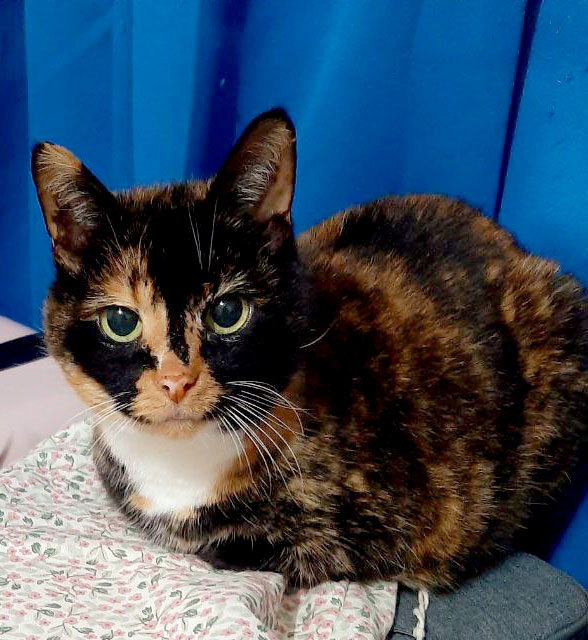

Muse

- Gender: Female
- Breed: Domestic Longhair
- Birthday: March 2006 (19 years old)
- Personality: Wise and gentle
- Favorite food: Salmon treats
- Funny habit: Sleeps with paws over her eyes
- Story: Family member for almost two decades
- Favorite spot: Sunny patch on the sofa
- Special talent: Purrs like a small engine